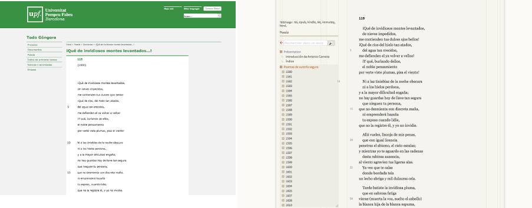

Workshop
Edición digital y análisis cuantitativo de textos poéticos del Siglo de Oro
Antonio Rojas Castro
Università di Verona
29-30 de noviembre y 6-7 de diciembre de 2017

Sesiones
- 29/11/2017: Introducción a la edición académica digital
- 30/11/2017: Ejercicios prácticos de codificación TEI
- 06/12/2017: Ejercicios prácticos de transformación XSLT
- 07/12/2017: Introducción a Stylo (clasificación y palabras distintivas)
Objetivos generales
- 1. Codificar con TEI textos poéticos del Siglo de Oro español en doble presentación, con notas y aparato de variantes.
- 2. Realizar transformaciones sencillas de documentos XML/TEI en formato HTML con hojas de estilo XSLT.
- 3. Utilizar las principales funcionalidades de la herramienta Stylo con el objetivo de analizar textos literarios.
Sesión 1
¿Qué vamos a aprender hoy?
- 1. Introducción a la edición académica digital
- 2. El lenguaje de marcado
- 3. La codificación TEI
- 4. Editar con Oxygen
1. Introducción a la edición académica digital
El medio electrónico
- Audiencia mayor
- No tiene las restricciones del papel en cuanto a la escala.
- Las publicaciones son interactivas.
- Incorpora contenido multimedia y hiperenlaces.
- Incrementa la velocidad con que actualizamos los contenidos.
- Desplaza el coste desde la publicación (impresión en papel) a la creación y mantenimiento de los recursos.
Características del texto digital
- 1. Intercambio de datos y búsquedas federadas.
- 2. Reutilización de datos y textos con otros propósitos.
- 3. Mantenimiento y preservación de los textos a largo plazo a través de copias distribuidas.
Características texto digital
- 4. A partir de una sola fuente (input), se pueden generar múltiples documentos (output):
- diferentes medios (web, móvil, PDF)
- modalidades de edición (paleográfica, modernizada, con aparato de variantes)
- filtros (índices, tablas de contenidos)
Tareas del editor académico
- Buscar
- Cotejar
- Transcribir
- Modernizar
- Corregir
- Anotar
- Explicar
- Difundir
El editor como intermediario
En la era digital, el/la editor/a sigue siendo necesario porque los textos pueden contener errores y porque deben explicarse teniendo el contexto de producción.
Las teorías editoriales tradicionales (edición crítica, filología de autor, crítica génetica, etc.) siguen siendo útiles para establecer textos.
Nuevas tareas: modelar, codificar, transformar y publicar.
Modelar
Cuando hacemos explícita la estructura de un documento decimos que lo estamos modelado.
El proceso conlleva una serie de acciones como análisis, selección y representación.
No hay modelado neutral

¿Qué propiedades textuales te interesan? ¿Qué relaciones puedes establecer entre dichas propiedades textuales? ¿Cuáles son sus atributos?
No hay modelado neutral
Etiquetar un texto con lenguaje de marcado es un acto interpretativo.
Todos somos hijos de nuestra época, cargamos con una experiencia editorial concreta, disponemos de recursos limitados y tenemos intereses muy específicos.
¿Preguntas? ¿Dudas?

2. El lenguaje de marcado
¿Qué lenguajes de marcado conoces?
¿Algunos nombres?
Dos tipos de lenguaje de marcado
- Presentacional: visualiza el aspecto de un texto:
Edición digital y análisis cuantitativo... - Descriptivo: representa el contenido de un texto:
Edición digital y análisis cuantitativo...
El lenguaje de marcado descriptivo
- Separa el contenido de un texto de su aspecto a fin de facilitar la reutilización de la información.
- Permite realizar cambios sobre el aspecto en una colección de textos.
Hello, XML!
- XML es un lenguaje de marcado descriptivo que sirve para estructurar datos en forma de documento.
- Se distingue de HTML en tres aspectos:
- XML es extensible
- XML debe estar bien formado
- XML puede validarse con un esquema
- XML requiere el uso de textos en Unicode (ISO 10646).
¿Qué aspecto tiene un documento XML?
Información sobre el documento
Comentario de texto
Estrofas del poema
Notas
Bibliografía
Sintaxis del XML
- Un documento XML debe contener al menos un elemento.
- Elemento XML = etiqueta de inicio + contenido (opcional) + etiqueta de cierre
- El contenido del elemento puede ser una cadena de caracteres Unicode o bien otros elementos.
- Un elemento puede contener uno o más atributos; los atributos consisten en un nombre y un valor determinado.
- Un documento XML también puede contener otros componentes como instrucciones de procesamiento, comentarios y referencias a entidades (entity references).
Un documento XML está bien formado cuando...
- solo hay un único elemento raíz;
- todos elementos se anidan unos en otros formando una estructura arbórea contenida en el elemento raíz;
- todos nombres de los elementos y atributos están escritos correctamente (XML distingue entre mayúscula y minúscula);
- todos los elementos contienen una etiqueta de apertura y de cierre;
- los valores de los atributos están entrecomillados.

La declaración XML
Se sitúa al inicio del documento y sirve para...
- especificar que se trata de un documento XML;
- especificar la versión XML utilizada;
- especificar qué codificación de caracteres se está empleando.
La declaración XML
Información sobre el documento
Comentario de texto
Estrofas del poema
Notas
Bibliografía
Algunas particularidades...
- Los caracteres especiales como < y & no pueden representarse como tal sino utilizando entidades.
- Las entidades se delimitan con & y ;
- Podemos añadir comentarios, pero para que no se interpreten como XML deben estar delimitados por
¿Preguntas? ¿Dudas?
3. La codificación TEI
¿Qué es?
- La Text Encoding Initiative (TEI) es un modelo abstracto con el que es posible representar textos académicos en formato digital cuyos orígenes se remontan a 1987.
- Las Guidelines de la TEI es una publicación que consta de 23 capítulos; cada capítulo cubre un módulo, es decir, un grupo de elementos y atributos.

La primera versión es de 1994; actualmente utilizamos la quinta versión o P5.
Las Guidelines son modulares y adaptables a cada proyecto.
¿Preguntas? ¿Dudas?
Componentes principales de un documento TEI
- Un documento TEI contiene un elemento TEI con datos y metadatos.
- Los metadatos se hallan en el elemento teiHeader.
- Los datos (en nuestro caso el texto poético) se hallan en el elemento text.
Estructura básica de un documento TEI
Título de la edición
Información sobre la publicación
Información sobre la fuente de la que deriva el texto.
El poema va aquí
¿Qué entendemos por "metadatos"?
- A menudo se definen como "datos sobre los datos".
- Los metadatos son datos sobre los datos, el contexto o la estructura de los recursos electrónicos.
- Equivalen (más o menos) a la página de créditos de un libro impreso.
¿Por qué son importantes los "metadatos"?
- Permiten la identificación, la recuperación, el uso, la gestión y la preservación de nuestros recursos electrónicos.
- Enriquecen con información adicional los recursos electrónicos.
- Granularidad: pueden describir una colección de objetos, un recurso aislado o bien un componente dentro de una colección más grande.
¿Quién suele utilizar "metadatos"?
- Los bibliotecarios utilizan metadatos (casi siempre en formato MARC) para identificar recursos de manera estable y para declarar la licencia con que se publican.
- Los investigadores utilizan metadatos para identificar la fuente de la que derivan los recursos y para crear aplicaciones webs que filtren el contenido de acuerdo a determinados metadatos.
Algunos estándares de metadatos
- DCMI = Dublin Core Metadata Initiative
- RDF = Resource Description Framework
- EAD = Encoded Archival Description
- METS = Metadata Encoding and Transcription Standards
- OAIS = Open Archival Information
- OAI-PMH = Open Archives Initiative-Protocol for Metadata Harvesting
Los metadatos en TEI
- TEI proporciona un vocabulario más rico que EAD y DCMI y menos abstracto que otros estándares como RDF.
- Según TEI, los metadatos que describen un recurso deben formar parte del mismo recurso y aparecer en el encabezado, es decir, la primera parte del documento TEI (teiHeader).
- El encabezado TEI puede contener varios párrafos de prosa libre o bien una serie de elementos que contienen otros elementos.
Componentes principales del teiHeader
- fileDesc (file description) contiene una descripción bibliográfica completa sobre el recurso electrónico.
- encodingDesc (encoding description) documenta la relación entre el texto electrónico y la fuente de la deriva (por ejemplo, intervenciones editoriales).
- profileDesc (text-profile description) proporciona una descripción detallada de los elementos no bibliográficos del texto (por ejemplo, idioma, contexto de producción, personas mencionadas, palabras clave, etc.)
- revisionDesc (revision description) contiene un resumen del historial de cambios del archivo electrónico.
¡Solo el fileDesc es obligatorio!
El resto de elementos son opcionales.
Componentes principales del fileDesc
Algunos son obligatorios:
- titleStmt proporciona un título al recurso y declara quién es el responsable de la edición.
- sourceDesc documenta la fuente de la que deriva el texto electrónico.
- publicationStmt registra el modo en que el texto se publica o distribuye.
Componentes principales del fileDesc
Otros son opcionales:
- editionStmt documenta el número de la edición (1a, 2a, etc.)
- seriesStmt registra si el recurso forma parte de una serie de publicaciones.
- extent contiene información sobre el tamaño del recursos (bytes, discos, etc.).
- notesStmt proporciona información adicional en forma de nota.
Estructura básica del teiHeader
Información sobre el título, el autor y el editor de la edición digital
Información sobre la edición digital
Información sobre quién es responsable de la publicación
Información sobre las fuentes de las qu deriva el texto
¿Preguntas? ¿Dudas?
Componentes principales de text
- El texto se puede dividir en tres partes:
- front (preliminares) contiene material preliminar (resúmenes, portadas, dedicatorias, comentarios, prólogos) que se encuentral al inicio de un documento, antes del texto principal.
- body (cuerpo de texto) contiene el texto principal (por ejemplo, el poema)
- back (anexo) contiene material suplementario situado tras el texto principal.
- Cada una de estas tres partes se pueden dividir con elementos div, por ejemplo, para contener capítulos, partes o secciones.
Componentes principales de text
Contiene información preliminar como una Introducción al poema.
Contiene la primera parte del poema.
Contiene la segunda parte del poema.
Contiene la tercera parte del poema.
Contiene anexos como glosarios o bibliografía.
¿Cuándo debería codificar mis textos con TEI?
Antes de empezar a codificar con TEI, conviene analizar en detalle los textos y definir los objetivos.
Codificar con TEI no es díficil pero sí requiere tiempo, esfuerzo y, sobre todo, mano de obra (aunque el etiquetado puede automatizarse en parte).
Si solo quieres publicar textos en internet y no te preocupa la preservación o el procesamiento de los archivos, utiliza HTML para representar el contenido; es mucho más simple y directo (pero también limitado).
¿Cuándo debería codificar mis textos con TEI?
Utiliza la codificación TEI si...
- Necesitas un vocabulario rico y variado para describir propiedades textuales o metadatos.
- Necesitas validar tus documentos con un esquema a fin de controlar el vocabulario y la sintaxis.
- Necesitas procesar y transformar tu documento XML en distintos documentos XML o HTML.
- Quieres utilizar herramientas que requieren un documento TEI como fuente.
¿Preguntas? ¿Dudas?
¿Cuál de estos proyectos utiliza la codificación XML-TEI?
4. Editar con Oxygen
Ejercicio 1
Correción de un documento XML
Ejercicio 2
Crear un documento XML/TEI con Oxygen
Conclusiones... preguntas... ¿debate?
Sesión 2
¿Qué vamos a aprender hoy?
- 1.
- 2.
- 3.
- 4.